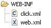

Quick Start Guide
This section discusses how to get a Click web application up quickly. This section
will not discuss how to configure your build system or IDE, but will focus on all
the basic pieces you need to get a Click application running.
A Quick Start application is also included in the Examples.
The following topics are covered:
Web Application Structure
First up add a click.xml and web.xml configuration file to
your applications WEB-INF directory:
|

|
- WEB-INF/click.xml
- Application Configuration
- WEB-INF/web.xml
- Servlet Configuration
|
click.xml
Your click.xml file should contain:
<?xml version="1.0" encoding="UTF-8"?>
<click-app>
<pages package="com.quickstart.page"/>
</click-app>
web.xml
Your web.xml file should contain:
<?xml version="1.0" encoding="UTF-8"?>
<web-app>
<servlet>
<servlet-name>click-servlet</servlet-name>
<servlet-class>net.sf.click.ClickServlet</servlet-class>
<load-on-startup>0</load-on-startup>
</servlet>
<servlet-mapping>
<servlet-name>click-servlet</servlet-name>
<url-pattern>*.htm</url-pattern>
</servlet-mapping>
<welcome-file-list>
<welcome-file>redirect.html</welcome-file>
</welcome-file-list>
</web-app>
JAR Files
Add the following JAR files to your application WEB-INF/lib:
- click-1.x.jar
- click-extras-1.x.jar
You can obtain these files from the Click distribution dist directory.
Welcome File
To ensure default application requests
(e.g. http://localhost:8080/quickstart/)
are sent to your applications home page we will add a redirect.html file
to the web root directory. This file should contain:
<html>
<head><meta http-equiv="Refresh" content="0;URL=home.htm"></head>
</html>
This redirect.html file is configured in our web.xml, and any
default requests will be served this file:
When the browser processes the redirect.html it will redirect to the
applications home.htm page.
Home Page
Now we are ready to add our first Click page which will be our applications home page.
First we define a HomePage class, and ensure the class file is published
to our web applications WEB-INF/classes directory:
package com.quickstart.page;
import net.sf.click.Page;
public class HomePage extends Page {
}
Next we add a corresponding Home page home.htm in the web root directory:
<html>
<head>
<title>Home</title>
<link rel="stylesheet" type="text/css" href="style.css" title="Style"/>
</head>
<body>
<div id="header">
<span id="title">Home</span>
</div>
<div id="container">
<b>Welcome</b> to Home page your application starting point.
</div>
</body>
</html>
Next add a style.css file to your web root directory:
body {
font-family: Arial;
margin: 0;
padding: 0;
}
#header {
background: #FDE3B5 url(/quickstart/banner.png) top left no-repeat;
height: 60px;
position: relative;
width: 100%;
}
#title {
color: white;
font-size: 28px;
left: 15px;
position: absolute;
top: 12px;
}
#container {
padding-top: 1em;
padding-left: 1.5em;
position: relative;
z-index: 0;
}
You should now have the following web files:
Now if your web application is deployed to the context path quickstart
you should now be able to make the request:
http://localhost:8080/quickstart/
Your browser should be redirected to your HomePage and you should see your page
rendered as:
Home
Welcome to Home page your application starting point.
|
In this example the Click automatically maps the home.htm request to
our HomePage class and uses this class to process the request.
Border Template
Now we want to create a page border template so application pages will have
a common look and feel.
First create a border-template.htm file in the web
root directory. In this file include the HTML content:
<html>
<head>
<title>$title</title>
<link rel="stylesheet" type="text/css" href="style.css" title="Style"/>
</head>
<body>
<div id="header">
<span class="title">$title</span>
</div>
<div id="container">
#parse($path)
</div>
</body>
</html>
Now we define a BorderPage class which specifies its template as the
new border-template.htm file:
package com.quickstart.page;
import net.sf.click.Page;
public class BorderPage extends Page {
public String getTemplate() {
return "border-template.htm";
}
}
Note we named the template file border-template.htm so that it is not
automatically mapped by Click to our BorderPage class.
Now we are going to modify our HomePage class to extend BorderPage
and define a title value.
package com.quickstart.page;
public class HomePage extends BorderPage {
public String title = "Home";
}
Next we modify our home.htm to remove the page border and
only include the specific Home page content.
<b>Welcome</b> to Home page your application starting point.
You should now have the following web files:
Now if you make browser request to your updated home page you should see identical
HTML content being rendered.
Home
Welcome to Home page your application starting point.
|
Logging
Click has some handy logging features which will shows you how your page
templates are being automatically mapped to you page classes. To enable debug
logging add a mode value of "debug" to your click.xml file:
<?xml version="1.0" encoding="UTF-8"?>
<click-app>
<pages package="com.quickstart.page"/>
<mode value="debug"/>
</click-app>
When the Click application starts up it will write out the following logging messages:
[Click] [debug] automapped pages:
[Click] [debug] /border-template.htm -> CLASS NOT FOUND
[Click] [debug] /home.htm -> com.quickstart.page.HomePage
[Click] [info ] initialized in debug mode
Click is telling us here that the border-template.htm template is not
mapped to any Page class, while the home.htm template is mapped to
our HomePage class. We are also informed that Click is running in
debug mode.
When make a request to our home page we may get the following output:
[Click] [debug] GET http://localhost:8080/quickstart/home.htm
[Click] [info ] renderTemplate: /home.htm,border-template.htm - 46 ms
[Click] [info ] handleRequest: /home.htm - 62 ms
This is telling us the HTTP request that the ClickServlet received. Then we
can see that it is rendering the page path home.htm and template
border-template.htm files in 46 milliseconds. Finally we can see that the total
time to handle this request was 62 milliseconds
If you need more detailed debugging information change the application mode to
trace. Now if we make the browser request:
http://localhost:8080/quickstart/home.htm?user=malcolm&password=secret
We will see the request parameters logged. This can be very handy for debugging
form posts.
[Click] [debug] GET http://localhost:8080/quickstart/home.htm
[Click] [trace] password=secret
[Click] [trace] user=malcolm
[Click] [info ] renderTemplate: /home.htm,border-template.htm - 0 ms
[Click] [info ] handleRequest: /home.htm - 0 ms
Whats Next ?
After you have the Quick Start application up and running you might be wondering,
where do I go from here? At this point you are recommended to:
-
Read the Click Best Practices topic.
-
Review the Click Examples application.
There is lot of good code examples and patterns you can lift into your application.
-
Add a Menu control
to your border-template.htm to provide application wide navigation.
-
Integrate J2EE Security into your
application.
Use the Menu $menu.isUserInRoles() method in your menu
rendering macro to only display a users authorized menu options.